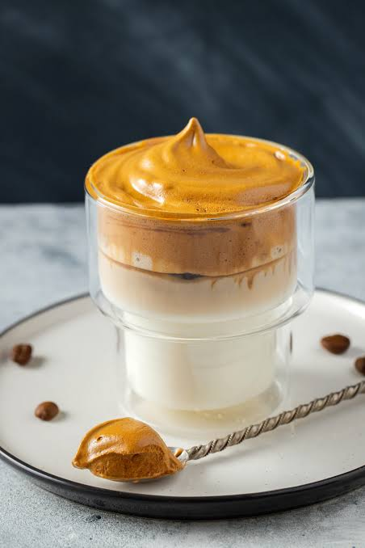
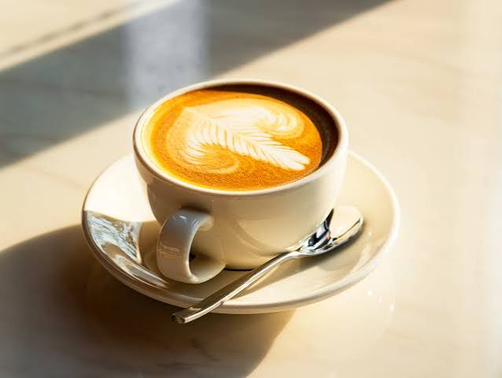
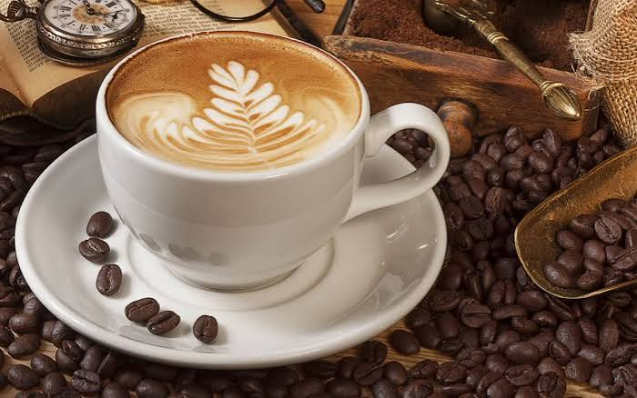

Nossos Cafés e Acompanhamentos
Café Moda da Casa (500ml) - R$19,50

café extraído forte ou solúvel de qualidade, leite gelado (ou vegetal), cubos de gelo, e adoçantes especiais como leite condensado, mel ou essência de baunilha para uma textura cremosa e sabor marcante
Café 2° Divisão (250ml) - R$15,50 -

Variedade dos Grãos: Produzido exclusivamente com grãos da espécie Coffea arabica, que garantem uma bebida mais nobre, aromática e naturalmente adocicada.
Café 3° divisão

O Café Extraforte é desenvolvido especialmente para o consumidor que busca máxima energia, rendimento e o sabor clássico do café do dia a dia brasileiro. É o produto ideal para o segmento de grande varejo e consumo em massa, destacando-se pela excelente relação custo-benefício.